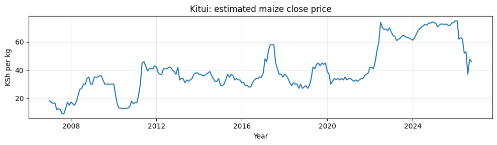
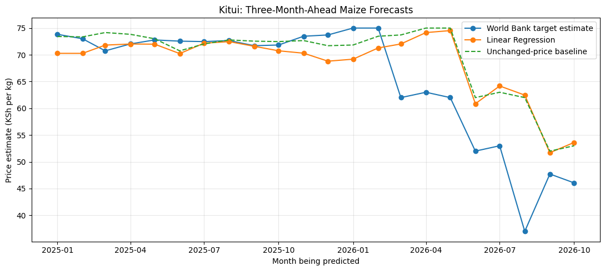

Prepare the history
2,380 monthly rows, January 2007–October 2026. Market encoding, current price, lags 1, 2, 3 and 12, three-month rolling mean, and seasonal sine/cosine inputs.
From historical estimates to three-month forecasts. An end-to-end exploration of white maize prices across ten Kenyan markets.
Explore the forecasts ↓Modeled estimates, not guaranteed prices. These are stored model outputs, not live market quotes. No calibrated prediction intervals are available.
24 historical months: November 2024–October 2026. Dashed orange segment: November 2026–January 2027 forecasts.
History uses the World Bank’s modeled close estimate, c_maize_fao, rather than a monthly average or verified transaction price. The baseline carries October’s estimate forward unchanged. All three horizons are predicted directly; November’s forecast is not fed back into later forecasts.
The current model did not clearly outperform the unchanged-price baseline.
Linear Regression achieved slightly lower RMSE at each horizon, but higher MAE. The differences were small and no significance test was performed. This is evidence of a complete forecasting workflow, not proven forecasting superiority.
| Horizon | Model MAE / RMSE | Baseline MAE / RMSE |
|---|---|---|
| 1 month | 2.65 / 4.32 | 2.58 / 4.34 |
| 2 months | 3.80 / 6.16 | 3.72 / 6.19 |
| 3 months | 4.81 / 7.58 | 4.71 / 7.61 |
2,380 monthly rows, January 2007–October 2026. Market encoding, current price, lags 1, 2, 3 and 12, three-month rolling mean, and seasonal sine/cosine inputs.
1,980 training origins through June 2024; 30 boundary rows held aside. 220 test examples across October 2024–July 2026, with 22 origins per market. Errors measure agreement with dataset estimates.
A separate pipeline was refitted on all 2,230 complete examples for the displayed forecasts. The evaluated model stays separate; the refit’s future performance is unknown.
Point forecasts do not express a validated uncertainty range. MAE is an average error, not a bound on any individual forecast.
Rainfall, transport costs and supply shocks are not explicit features. Unexpected changes may be missed.
The source combines prices with modeled estimates. Reported maize coverage is 5.46%; a complete series does not mean complete direct observation.
Revised historical estimates may include later information. Overlapping targets and related markets are not independent. The rolling mean adds no independent linear information.
Next steps: rolling validation with a separate final holdout, market-level evaluation, seasonal baselines, external drivers and validated prediction intervals. This project is experimental and should not be treated as a price advisory service.
Saved figures from the actual project notebook. The historical figure below shows the full series; the explorer above focuses on the most recent 24 months.


Notebook and report are not included in this public repository; copies can be supplied by the author. The notebook includes export code for forecast_model.joblib, historical_estimates.csv, latest_inputs.csv, forecasts.csv, evaluation_results.csv and metadata.json. The fitted binary is not bundled with this site. This site displays stored outputs and does not retrain a model.
World Bank: Monthly food price estimates by product and market, Kenya, KEN_2021_RTFP_v02_M, version 2026-10-05. Dataset documentation ↗
Historical chart values are extracted from the supplied CSV; forecast and evaluation values are transcribed from the corrected project report. To update: replace data.json and the CSV export, revise the model metadata and evaluation, and update the origin and source labels together. A newer release requires a new model run.